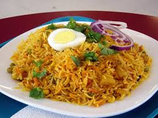

Biryani, an evergreen classic, really needs no introduction. It's aromatic, it's heavenly and one of the most loved delicacies of the country. It is believed that Mughals were the first to introduce Biryani in North India whereas South India was exposed to its brilliance through the Arabs.
Biryani flourished in some of the notable Muslim centres throughout the country - including Lucknow, old Delhi and Hyderabad, to name a few - after which it was gradually embraced by all.
The style of cooking Biryani in North India differed from the Southern states. Since a large part of North India was inhabited by vegetarian communities like Brahmins and Marwaris, North Indians successfully experimented with it to arrive at the vegetarian versions. Vegetable Biryani, colloquially called 'Tehri' is a classic Sunday meal in most North Indian homes.
Rice is widely consumed in the Southern part of the country owing to which one can find a miscellany of mouthwatering versions. South India boasts of a wide variety of Biryanis over any other part of the country. Hyderabad itself is said to cook up to 40 distinct versions. The fiery chettinad cuisine of Tamil Nadu exhibits magnificent Biryanis. Some of the most celebrated Biryanis of South include - Hyderabadi Biryani, Coorgi Mutton Biryani, Bhatkali Biryani and Mangalorean Fish Biryani.
Unlike Pulao, Biryani involves cooking rice and meat separately and finally cooking them together by forming layers of each in a vessel. One of the most famous ways of cooking Biryani is the dum method. It involves sealing the vessel thoroughly and keeping the lid closed to trap in the aroma. The Biryani is then cooked over slow fire/dum.